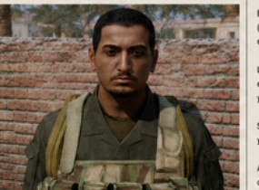

Registro de Operaciones
Cada operación queda registrada aquí una vez cerrado el informe posterior a la acción. Las capturas y grabaciones se adjuntan a la entrada.
Operación Liebre Roja
Última operación formal documentada por la unidad que se extendió a lo largo de más de una sesión.

Oficial de XXXXXXXXXXXX XXXXXXXXXX — régimen de XXXXXXXX
Tras la eliminación de un [ ████████████████ ], el [ ████████████████ ] declaró el inicio de hostilidades contra los [ ████████████ ] y presentó a seis cooperantes extranjeros capturados, ejecutados posteriormente como material propagandístico. Días después, cinco trabajadores humanitarios de la [ ████████████████████████████████ ] fueron secuestrados bajo la operación del régimen [ ██████████ ].
[ ██████ ] desplegó la [ ████████████████████ ] para rastrear al oficial responsable de la custodia de los rehenes, localizar el centro de detención, neutralizar la [ █████████████████████████ ] asociada y ejecutar el rescate con extracción de los cautivos con vida.
- Teatro de operaciones
- República Insular de Zahrak
- Área de interés
- Ciudad de Bolabongo
- Unidad solicitante
- JSOC – DEVGRU
- Fases de ejecución
- Rastreo · Confirmación · Limpieza · Asalto